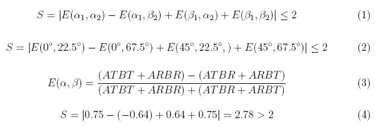
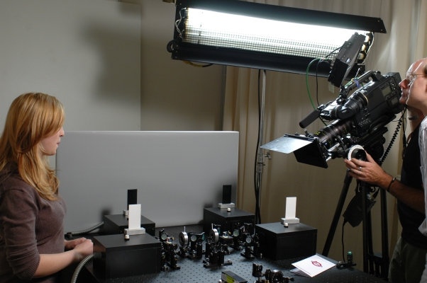
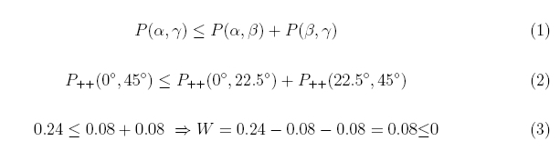
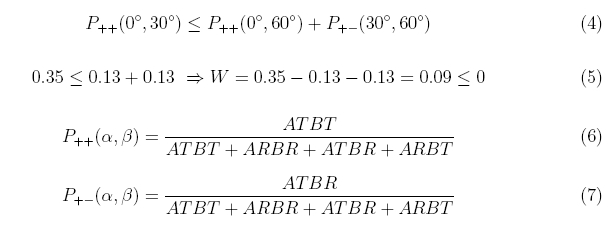
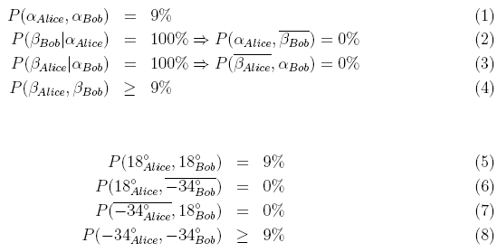
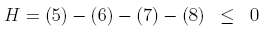

Verschränkung Kapitel D:
Kann
die
Nichtlokalität bewiesen werden?
Im Jahre 1935 erwähnten Einstein, Podolsky und Rosen in einem Gedankenexperiment zum ersten Mal das Problem der Nichtlokalität bei verschränkten Zuständen [Ein35]. John Bell veröffentlichte 1964 zu diesem Problem eine Ungleichung, mit der zwischen lokalen und nichtlokalen Theorien unterschieden werden kann [Bel64]. Diese Ungleichung wurde 1969 von Clauser,
Horne,
Shimony, und
Holt (CHSH) für reale Experimente angepasst [Cla69]. Neben der CHSH-Ungleichung gibt es zahlreiche weitere Ansätze zur Verletzung der Bellschen Ungleichung.
1972 wurde zum ersten Mal bei einem Verschränkungsexperiment die Nichtlokalität durch die Verletzung einer Ungleichung bestätigt [Fre72]. Bis heute ist der endgültige Beweis der Nichtlokalität bei verschränkten Zuständen noch Gegenstand der aktuellen Forschung: Das letzte "Schlupfloch" (Detektionseffizienz & Kommunikation) muss noch gemeinsam ausgeschlossen werden [Wei98], [Row01], [Fry95]. Auf der folgenden Seite werden drei häufig verwendete Ungleichungen für Zweiteilchensysteme: CHSH, Wigner und Hardy kurz vorgestellt und experimentell widerlegt.
Nichtlokalität: CHSH-Ungleichung
Die bekannteste Ungleichung zum Beweis der Nichtlokalität ist die CHSH-Ungleichung. Für die Herleitung der CHSH-Ungleichung (Formel 1) sei auf die Grundlagenliteratur zur Quantenoptik verwiesen [Fox06] (Seite: 304-309). Folgende Notation stimmt mit der dortigen Herleitung überein:

Mit den Winkeln in Formel 2 kann die CHSH-Ungleichung maximal verletzt werden. Experimentell wird die Korrelationsfunktion E über Koinzidenzen zwischen den Detektoren Alice Transmittiert, Alice Reflektiert, Bob Transmittiert und Bob Reflektiert bestimmt (Formel 3). Die Werte in Formel 4 stammen aus unserem Experiment. Die Messzeit pro Korrelationsfunktion E betrug 10s. Der Wert S=2,78 liegt deutlich über S=2, womit klassische Theorien und somit eine Lokalität ausgeschlossen werden können. Um bessere Aussagen über den Wert S machen zu können, sollte zu jeder Korrelationsfunktion auch die Standardabweichung ermittelt werden. Jede Korrelationsfunktion wurde deshalb 10 Mal für jeweils 10s gemessen. Mit diesen Messwerten lautet die CHSH-Ungleichung S=2,776±0,053. Die Annahme einer lokalen Theorie wurde hiermit um 14 Standardabweichungen verletzt. Unsere maximale Verletzung betrug 235 Standardabweichungen bei einer Messzeit von jeweils 10 mal 180s. Der eingestellte Bell-Zustand war Φ+.
Es gibt zahlreiche didaktische Veröffentlichungen, die die CHSH-Ungleichung mit Beispielen aus unserer klassischen Welt verknüpfen und sie so zu einem Widerspruch führen. Als Alltagsbeispiele werden farbige Socken [Bel80] oder blinkende Lampen [Mer81] verwendet.
Zur Visualisierung verschränkter Zustände und zur Widerlegung der CHSH-Ungleichung entsteht momentan ein professioneller Spielfilm in Kinoqualität. Das Filmprojekt wird von Dr. S. Heusler (Didaktik der Physik, Universität Münster) geleitet [Heu08]. Alice und Bob agieren im Spielfilm als Hauptdarsteller in einer Detektivgeschichte. Als weitere Filmrolle agiert ein Hausmeister, der von Prof. Dr. H. Lesch (LMU München) dargestellt wird. Im Film werden physikalische Zusammenhänge Schritt für Schritt mit Hilfe von Zeichentrickelementen erläutert. Die Erklärungen führen schließlich auf ein Realexperiment mit verschränkten Photonen, das in unserem Labor aufgezeichnet wurde (Abb. 1). Der Spielfilm wird Anfang 2009 erscheinen.

Abb. 1: Filmaufnahme: Alice (Hannah Flessner) erklärt die CHSH-Ungleichung am Experiment
Nichtlokalität: Wigner-Ungleichung
Ein mengentheoretischer Zugang zur Bell-Ungleichung wurde 1970 von Wigner veröffentlicht [Wig70]. Zur Herleitung dieser Wigner-Ungleichung (Formel 1) sei auf die Grundlagenliteratur zur Quantenoptik verwiesen [Sak85] (Seite: 304-309), [Sch98] (Seite 388-394). Folgende Notation stimmt mit den dortigen Herleitungen überein:

Mit den Winkeln in Formel 2 kann die Wigner-Ungleichung verletzt werden. Experimentell wird die Wahrscheinlichkeit P über Koinzidenzen zwischen den Detektoren Alice Transmittiert, Alice Reflektiert, Bob Transmittiert und Bob Reflektiert bestimmt (Formel 6). Die Werte in Formel 3 stammen aus unserem Experiment. Die Messzeit pro Wahscheinlichkeitsfunktion betrug 10s. Die Formel 3 zeigt mit dem Wert W=0.08<0 eine deutliche Verletzung der Ungleichung, womit klassische Theorien ausgeschlossen werden können. Die maximale Verletzung der Wigner-Ungleichung ist mit den folgenden Winkeln und Wahrscheinlichkeiten möglich:

Um bessere Aussagen über die Ungleichung machen zu können, sollte zu jeder Wahrscheinlichkeit auch die Standardabweichung ermittelt werden (10 Messungen zu 10s). Die Wigner-Ungleichung (Formel 4) lautet hierbei W=0.0991±0,0056. Die Annahme einer lokalen Theorie wurde hiermit um 17 Standardabweichungen verletzt. Unsere maximale Verletzung betrug 76 Standardabweichungen bei einer Messzeit von jeweils 10 * 60s. Der eingestellte Bell-Zustand war Φ+.
Es gibt zahlreiche didaktische Veröffentlichungen, die die Wigner-Ungleichung mit Alltagsbeispielen verknüpfen. Als Beispiele aus dem Alltag werden hier Zwillingspaare [Zei05] oder Betriebsmitarbeiter [Emb00] verwendet.
Nichtlokalität: Ansatz von Hardy
Ein weiterer Zugang zur Bell Ungleichung wurde 1993 von Hardy veröffentlicht [Har93]. Für den Ansatz von Hardy wird keine Ungleichung benötigt! Für den Beweis der Nichtlokalität werden nur zwei verschiedene Winkeleinstellungen benötigt. Allerdings funktioniert dieser Ansatz nur für nicht maximal verschränkte Zustände, die mit der Typ I Verschränkungsquelle hergestellt werden können. Für die mathematischen Herleitung des Hardy-Ansatzes sei auf die Veröffentlichungen [Har93], [Car06] verwiesen. Insgesamt werden für den klassischen Ansatz von Hardy vier Wahrscheinlichkeiten (Formel 1 - 4) angenommen:

Wenn die Wahrscheinlichkeiten 1-3 in einem Experiment bestätigt wird, muss mit klassischer Vorstellung die Wahrscheinlichkeit 4 >= 9% sein. Im interaktiven Experiment werden für die maximale Verletzung des Ansatzes von Hardy die beiden Winkel von 18° und -34° verwendet. Diese Winkel können mit den beiden grauen Tastern unter der jeweiligen Wellenplatte verändert werden. Die nicht maximale Verschränkung wird über die Polarisation des Pump-Lichts (Polarisationswinkel: 65°) eingestellt.
Führen Sie das Experiment durch und überprüfen Sie zunächst die Behauptungen der Formeln 1-3 bzw. 5-7. Nach der Bestätigung dieser drei Wahrscheinlichkeiten überprüfen Sie die Wahrscheinlichkeit 4 bzw. 8. Welcher Widerspruch taucht hier auf?
Beobachtung:
Die Wahrscheinlichkeiten 1-3 können mit dem Experiment ohne Probleme bestätigt werden. Ein Widerspruch taucht allerdings bei der Wahrscheinlichkeit 4 auf. Die Vermutung war, dass diese Wahrscheinlichkei mindestens 9% beträgt. Das Experiment zeigt ca. 0%. Da reale Experimente immer mit Messfehlern behaftet sind, wird zur endgültigen Auswertung trotzdem eine Ungleichung benötigt, die mit den Wahrscheinlichkeiten 5-8 lautet:
Alle Messwerte im interaktiven Experiment zeigen allerdings einen deutlichen Widerspruch zur klassischen Annahme: H>0. Um bessere Aussagen über die Ungleichung machen zu können, sollte zu jeder Wahrscheinlichkeit auch die Standardabweichung ermittelt werden (10 Messungen zu 10s). Mit der Standardabweichung ergibt sich der Wert für H von H=0.0925±0.0028. Die Annahme einer lokalen Theorie wurde hiermit um 33 Standardabweichungen verletzt. Unsere maximale Verletzung betrug 87 Standardabweichungen bei einer Messzeit von jeweils 10 * 240s. Der eingestellte Bell-Zustand war Φ-.
Das gleiche interaktive Experiment mit blinkenden Lampen ist im Kapitel_3 vorhanden. Um den Widerspruch z. B. auch für den Schulunterricht möglichst deutlich zu machen, wird das Realexperiment in diesem Kapitel mit dem Alltagsbeispiel Kleidung an Personen verknüpft. Es gibt zahlreiche weitere didaktische Veröffentlichungen, die den Ansatz von Hardy mit Alltagsbeispielen verknüpfen. Als Beispiele werden hier blinkende Lampen [Mer94], holländische Türen [Bra97] oder Kuchen [Kwi00] verwendet.
Originaldaten aus dem Hardy-Experiment: Kontinuierliche Ereignisse
Zurück zur Übersicht [klick]
Autor: P. Bronner, September 2008